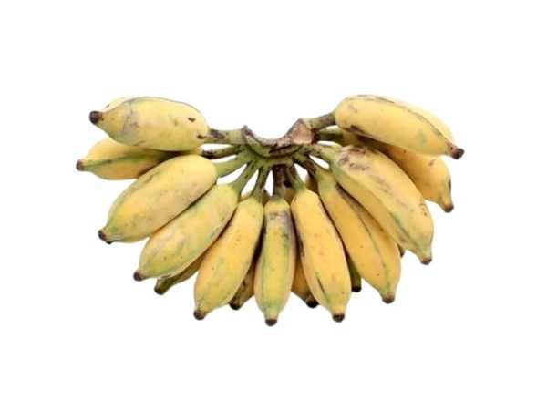
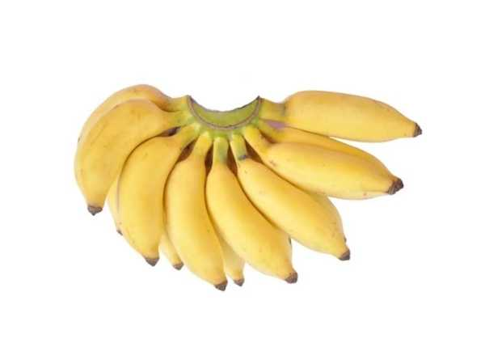
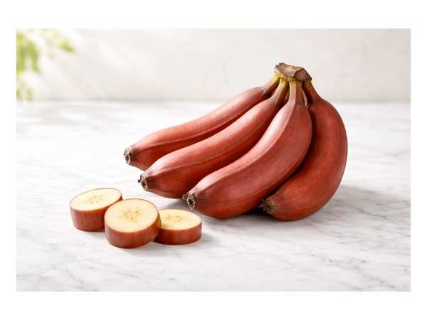
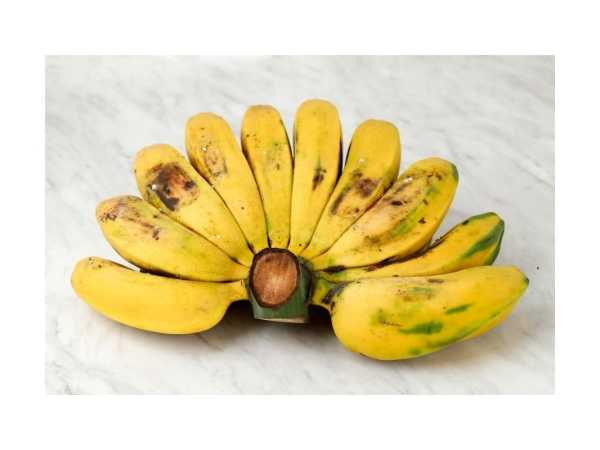
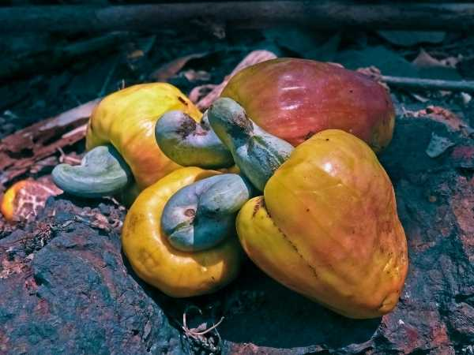
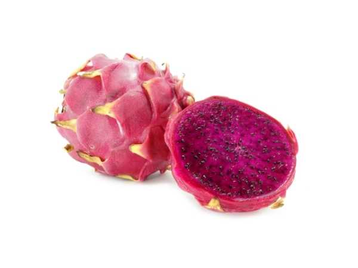
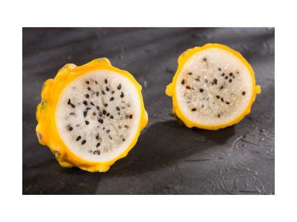
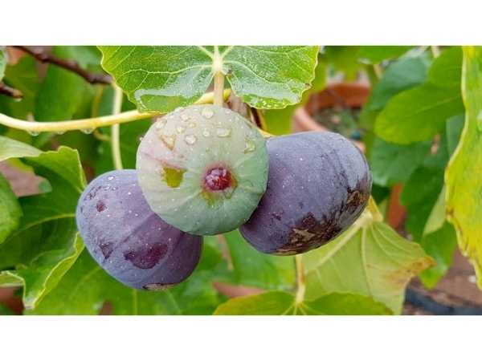
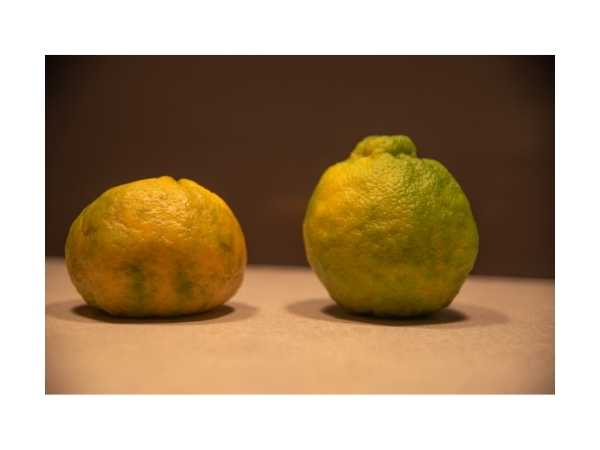

🍎 Fruit Trees
Tropical and subtropical fruit varieties grown at ArkFarm.
Abiu
Pouteria caimito
Amazonian fruit with smooth yellow skin and caramel-sweet translucent pulp.
Ambalam
Spondias pinnata
Tropical tree with sour mango-like fruit used in pickles and curries.
Ambalam (Sweet)
Spondias dulcis
Sweet variety of ambarella with crisp golden-green fruit.
Apple - Malayan
Syzygium malaccense
Tropical tree with bell-shaped red fruit and rose-scented flesh.
Apple - Rose / Panneer
Syzygium jambos
Fragrant rose-scented tropical apple with crisp watery flesh.
Apple - Star Apple (Milk Fruit – Purple)
Chrysophyllum cainito
Tropical tree with purple fruit containing sweet milky-white pulp.
Apple - Sweet Wood
Limonia acidissima (sweet variety)
Sweet cultivar of wood apple with milder, sweeter pulp.
Apple - Velvet
Diospyros blancoi
Tropical fruit with velvety red skin and creamy sweet flesh.
Apple - Water Apple (Dahai / Chamba)
Syzygium samarangense 'Dahai'
Premium Thai water apple cultivar with large deep red fruit.
Apple - Water Apple (Green)
Syzygium samarangense
Tropical bell-shaped fruit with crisp, watery green flesh.
Apple - Wood
Limonia acidissima
Hard-shelled Indian fruit with tangy aromatic pulp used in chutneys.
Apple Ber (Green / Indian Jujube)
Ziziphus mauritiana
Classic green Indian jujube with sweet-tart crisp flesh.
Apple Ber (Red)
Ziziphus mauritiana 'Apple Ber Red'
Large-fruited red Indian jujube with crisp apple-like texture.
Araza Boi
Eugenia stipitata
Amazonian fruit with intensely aromatic sour pulp used in juices.
Avocado - Arka Supreme
Persea americana 'Arka Supreme'
Indian avocado variety developed by IIHR with creamy rich flesh.
Avocado - Kendil
Persea americana 'Kendil'
Tropical avocado cultivar with large fruit and buttery texture.

Banana - Karpuravalli
Musa acuminata
Karpuravalli Banana, Camphor Banana, Aromatic Banana
Banana - Nendran
Musa × paradisiaca
Nendran Banana, Kerala Banana, Nendrapazham, Plantain Banana
Banana - Peyan
Musa × paradisiaca
Peyan Banana, Monthan Banana, Cooking Banana, Plantain
Banana - Poongathali
Musa × paradisiaca
Poongathali Banana, Poonkathali Banana

Banana - Poovan
Musa acuminata
Poovan Banana, Mysore Banana, Lady Finger Banana, Pisang Mas
Banana - Rasthali
Musa × paradisiaca
Rasthali Banana, Silk Banana, Apple Banana, Ambon Banana

Banana - Red
Musa acuminata
Red Banana, Red Dacca, Lal Kela, Claret Banana

Banana - Sirumalai
Musa acuminata
Sirumalai Banana, Hill Banana, Small Banana

Banana - Yelakki
Musa acuminata
Yelakki Banana, Elaichi Banana, Cardamom Banana, Lady Finger Banana
Berry - Blackberry
Rubus fruticosus
Thorny shrub producing sweet-tart dark purple aggregate berries.
Berry - Blueberry
Vaccinium corymbosum
Antioxidant-rich blue berry shrub prized for health benefits.
Berry - Brazilian Long Mulberry
Morus nigra 'Brazilian Long'
Brazilian mulberry cultivar with elongated dark sweet berries.
Berry - Himalayan Mulberry
Morus serrata
Cold-hardy Himalayan mulberry with intensely flavored dark berries.
Berry - Long Mulberry
Morus alba 'Long'
Mulberry cultivar producing extra-long sweet fruit clusters.
Berry - Mulberry
Morus alba
Fast-growing tree with sweet elongated berries in white, red, or black.
Berry - Pakistan Mulberry
Morus macroura 'Pakistan'
Giant mulberry variety producing very long sweet ruby-red fruit.
Berry - Red Gooseberry / Amla
Phyllanthus emblica
Indian gooseberry rich in Vitamin C, used in Ayurveda and cooking.
Berry - Star Gooseberry
Phyllanthus acidus
Tropical tree with clusters of small sour star-shaped fruit.
Berry - Strawberry
Fragaria × ananassa
Popular red berry with sweet juicy flesh grown as ground cover.
Bignay / Currant Tree Fruit
Antidesma bunius
Tropical tree with clusters of small currant-like berries used in jams and wine.
Bilimbi
Averrhoa bilimbi
Sour tropical fruit used in pickles, curries, and traditional remedies.

Cashew Nut
Anacardium occidentale
Cashew, Cashew Nut, Cashew Apple Tree

Cat Eye Fruit
Syzygium zeylanicum
Cat Eye Fruit, Ceylon Syzygium, Wild Jamun
Cherry - Baraba / Lemon Drop Mangosteen
Garcinia intermedia
Tropical tree with tangy lemon-flavored yellow fruit.
Cherry - Barbados
Malpighia emarginata
Vitamin C-rich tropical cherry used in juices and supplements.
Cherry - Cedar Bay
Eugenia reinwardtiana
Australian native cherry with sweet red fruit and compact growth.
Cherry - Cherry of the Rio Grande
Eugenia involucrata
Brazilian cherry tree with dark purple sweet fruit.
Cherry - Grumichama / Brazil Cherry
Eugenia brasiliensis
Brazilian cherry tree with sweet dark purple grape-like fruit.
Cherry - Manila Tennis Ball
Eugenia reinwardtiana
Fast-growing tropical tree with small sweet red berries.
Cherry - Red Surinam
Eugenia uniflora (red variety)
Tropical shrub with ribbed bright red cherry fruit and tangy flavor.
Cherry - Savannah
Eugenia punicifolia
Hardy Brazilian savannah cherry with small sweet red fruit.
Cherry - Surinam Black
Eugenia uniflora (black variety)
Tropical shrub with ribbed dark purple-black cherry fruit.
Coconut
Cocos nucifera
Versatile tropical palm yielding coconut water, milk, oil, and coir.
Custard Apple - Atemoya
Annona × atemoya
Hybrid custard apple combining cherimoya and sugar apple flavors.
Custard Apple - Purple / Red
Annona squamosa (purple variety)
Striking purple-skinned custard apple with sweet fragrant pulp.
Custard Apple - Ram Seetha
Annona reticulata
Heart-shaped custard apple with smooth creamy sweet pulp.
Custard Apple - Soursop / Mullu Seetha
Annona muricata
Large spiny tropical fruit with tangy-sweet white pulp.

Dragon Fruit - Purple
Hylocereus costaricensis
Purple Dragon Fruit, Red Dragon Fruit, Costa Rican Pitaya, Purple Pitaya

Dragon Fruit - Yellow
Selenicereus megalanthus
Yellow Dragon Fruit, Yellow Pitaya, Colombian Pitaya, Yellow Pitahaya
Egg Fruit
Pouteria campechiana
Tropical fruit with dry egg yolk-like golden flesh and sweet flavor.

Fig - Brown Turkey
Ficus carica
Brown Turkey Fig, Common Fig, Purple Fig

Fig - Elephant Ear / Timla
Ficus auriculata
Elephant Ear Fig, Timla, Roxburgh Fig, Giant Himalayan Fig

Fig - Pune Red
Ficus carica
Pune Red Fig, Indian Red Fig, Common Fig (Pune variety)

Grape - Black
Vitis vinifera
Black Grape, Dark Grape, Wine Grape
Guava - Grape
Psidium guineense
Unique guava variety with grape-like purple skin and sweet pulp.
Guava - L-49
Psidium guajava 'L-49'
High-yielding Lucknow guava with white flesh and excellent sweetness.
Guava - Native
Psidium guajava
Traditional native guava with aromatic fruit and hardy growth.
Guava - Purple Forest
Psidium cattleianum (purple)
Compact guava with deep purple skin and sweet strawberry-like flavor.
Guava - Small Beetroot
Psidium guajava 'Beetroot'
Small guava with deep red beetroot-colored flesh and rich flavor.
Guava - Strawberry
Psidium cattleianum
Small fruited guava with intense strawberry-like flavor.
Guava - Taiwan Pink
Psidium guajava 'Taiwan Pink'
Large crisp guava with pink flesh and mild sweet flavor.
Ice Cream Bean
Inga edulis
Tropical legume tree with long pods containing sweet cottony white pulp.
Jaboticaba / Brazilian Grape
Plinia cauliflora
Unique Brazilian tree bearing grape-like fruit directly on its trunk.
Jackfruit - Honey Red
Artocarpus heterophyllus 'Honey Red'
Premium jackfruit with honey-sweet reddish-orange flesh.
Jackfruit - J-33
Artocarpus heterophyllus 'J-33'
High-yielding jackfruit variety with firm sweet orange flesh.
Jackfruit - Nongadak
Artocarpus heterophyllus 'Nongadak'
Northeast Indian jackfruit variety with unique flavor and texture.
Jackfruit - Panruti
Artocarpus heterophyllus 'Panruti'
Famous Panruti jackfruit known for large size and sweet thick flesh.
Jackfruit - Vietnam Super Early
Artocarpus heterophyllus 'Vietnam Super Early'
Dwarf early-bearing Vietnamese jackfruit fruiting within 2 years.
Jamun - Jumbo Jamun / Bardoli
Syzygium cumini 'Bardoli'
Extra-large Bardoli jamun with plump sweet fruit and small seed.
Jamun - Killi Naval
Ardisia elliptica
Small-fruited jamun variety with intense purple color and astringent taste.
Jamun - Thai King
Syzygium cumini 'Thai King'
Large-fruited Thai jamun cultivar with sweet juicy purple flesh.
Jamun - White Jamun
Syzygium cumini (white variety)
Rare white-fleshed jamun variety with milder sweeter flavor.

Kamala Orange
Citrus reticulata
Kamala Orange, Mandarin Orange, Tangerine, Loose-skin Orange
Kodakapuli / Manila Tamarind
Pithecellobium dulce
Tropical tree with coiled pods containing sweet-tart pink and white pulp.
Lemon - Native
Citrus limon
Hardy native lemon variety with intense sour flavor and high juice content.
Lipote
Syzygium polycephaloides
Rare Philippine fruit tree with small sweet purple berries.
Litchi
Litchi chinensis
Tropical fruit with rough red shell and sweet translucent juicy flesh.
Longan - All Season
Dimocarpus longan 'All Season'
Everbearing longan variety producing fruit throughout the year.
Longan - Diamond River
Dimocarpus longan 'Diamond River'
Premium longan cultivar with large sweet translucent flesh.
Longan - Ruby
Dimocarpus longan 'Ruby'
Rare ruby-skinned longan with sweet aromatic flesh.
Mango - All Season
Mangifera indica 'All Season'
Everbearing mango variety that fruits multiple times a year.
Mango - Bangalore
Mangifera indica 'Bangalore'
Oblong Karnataka mango used fresh and for processing.
Mango - Banganapalli
Mangifera indica 'Banganapalli'
Large golden Andhra mango with fiberless sweet pulp.
Mango - Himam Pasand
Mangifera indica 'Himam Pasand'
Prized Hyderabadi mango with rich creamy pulp and royal heritage.
Mango - Kalapadi
Mangifera indica 'Kalapadi'
Traditional South Indian mango variety with sweet aromatic flesh.
Mango - Kotturkonam
Mangifera indica 'Kotturkonam'
Rare Kerala mango variety with distinctive flavor profile.
Mango - Malkova
Mangifera indica 'Malgova'
Premium South Indian mango variety known for its rich flavor and large fruit.
Mango - Miyazaki
Mangifera indica 'Miyazaki'
Ultra-premium Japanese red mango known as Egg of the Sun.
Mango - Nam Doc Mai Gold
Mangifera indica 'Nam Doc Mai'
Premium Thai mango with golden fiberless flesh and floral sweetness.
Mango - Neelam
Mangifera indica 'Neelam'
Late-season small mango with intense sweetness and strong aroma.
Mango - Sweet Katimon
Mangifera indica 'Katimon'
Sweet Philippine mango variety with compact growth habit.
Miracle Fruit
Synsepalum dulcificum
West African berry that makes sour foods taste sweet for up to an hour.
Olosapo
Couepia polyandra
Rare Central American fruit tree with sweet creamy yellow pulp.
Orange - Dekopon
Citrus reticulata 'Dekopon'
Premium seedless Japanese mandarin with intense sweetness and easy peel.
Passion Fruit
Passiflora edulis
Tropical climbing vine producing aromatic purple or yellow fruit.
Plum - Coco
Chrysobalanus icaco
Tropical coastal fruit with sweet cottony flesh and edible kernel.
Plum - Governor / Madagascar
Flacourtia indica
Tropical thorny tree with small tart dark red-purple fruit.
Plum - Loquat / Lokat
Eriobotrya japonica
Subtropical evergreen tree producing sweet orange fruit clusters.
Plum - Natal
Carissa macrocarpa
South African thorny shrub with fragrant flowers and sweet red fruit.
Plum - Rain Forest
Prunus africana
Tropical African highland tree valued for medicinal bark.
Plum - Santa Rosa
Prunus salicina 'Santa Rosa'
Popular Japanese plum variety with sweet red-purple fruit.

Pomegranate
Punica granatum
Pomegranate, Anar, Dalim, Grenadine
Pomelo - Bablimas
Citrus maxima 'Bablimas'
Large citrus fruit with sweet pink flesh and thick rind.
Rambutan - Rongrien
Nephelium lappaceum 'Rongrien'
Premium Thai rambutan with sweet translucent flesh and easy seed separation.
Sapota - Thai King
Manilkara zapota 'Thai King'
Large Thai sapota cultivar with brown sugar-sweet grainy flesh.
Sea Grape
Coccoloba uvifera
Coastal tropical tree with grape-like clusters of sweet-tart fruit.
Star Fruit - Sweet
Averrhoa carambola (sweet variety)
Sweet variety of star-shaped tropical fruit with mild crisp flesh.
Star Fruit (Regular)
Averrhoa carambola
Star-shaped tropical fruit with tangy-sweet juicy flesh.
Sweet Lime - Bali
Citrus limetta 'Bali'
Bali sweet lime variety known for large fruit and refreshing flavor.
Sweet Lime - Nagpur
Citrus limetta 'Nagpur'
Popular Nagpur sweet lime with mild sweet juice, widely grown in India.
Sweet Lime - Vietnam
Citrus limetta 'Vietnam'
Vietnamese sweet lime cultivar with thin skin and abundant sweet juice.
Sweet Luvi
Flacourtia inermis
Small tropical tree with clusters of sweet dark red fruit.
Sweet Santol / Cotton Fruit
Sandoricum koetjape
Southeast Asian fruit with cottony sweet-sour pulp around large seeds.

Sweet Tamarind
Tamarindus indica
Sweet Tamarind, Tamarind, Imli, Indian Date